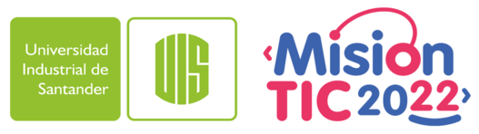

consultorio misionTIC 2022

Consultorio Online: Debido a la pandemia por la Covid-19, el Ministerio de Salud en conjunto con MinTic han lanzado una convocatoria para automatizar el proceso de atención de los consultorios de medicina general. Su empresa de desarrollo de software desea participar en la convocatoria y, para esto, deberá presentar una propuesta de desarrollo que permita el registro, reserva y consulta de citas médicas, así como la trazabilidad de pacientes y medicamentos formulados.